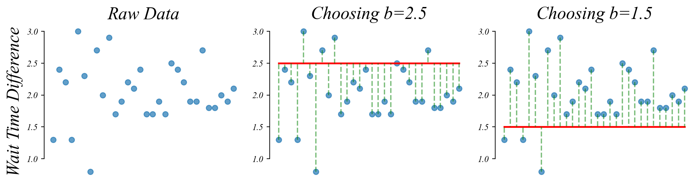
The economist’s data analysis pipeline.
The general linear model is just drawing lines through data points.
Linear Model Equation: \(y = mx + b\)
Mean Sqaured Error: \(MSE = \frac{1}{n} \sum_i \epsilon_i^2\)
Lets start with a model with no x ( basically: x=0 ).
This simple model look like: \(y=b\).
> there’s only an incercept term!
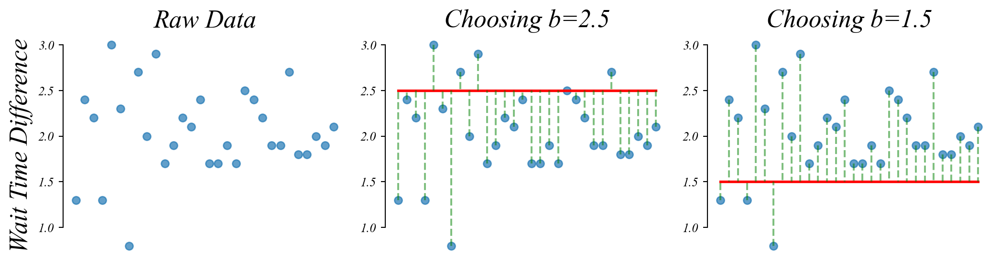
> what should we choose for b to minimize the model’s error?
The sample mean minimizes the MSE.
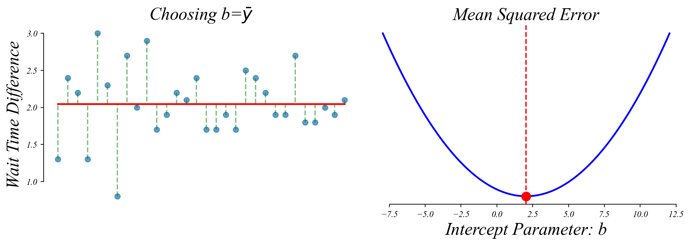
> this also means that the MSE equals the Variance!
Like before, if we take many samples, we get slighly different means and slighly different fits.
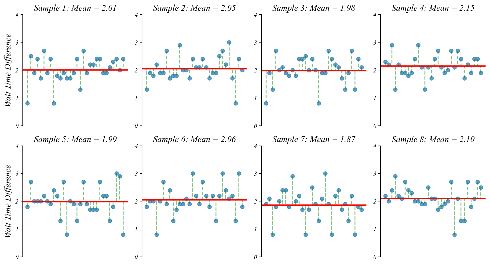
The mean follows a normal distribution centered on the true mean
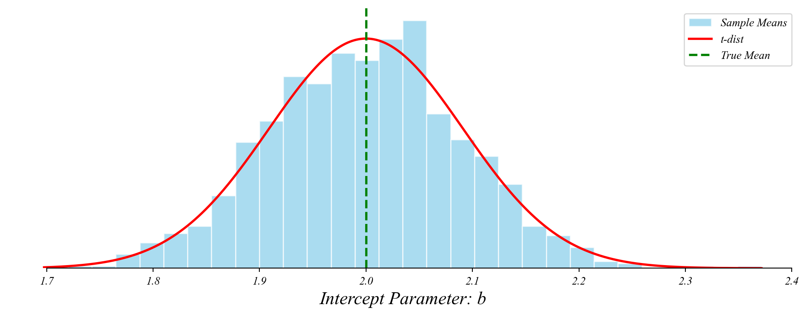
We don’t know the true mean, just our sample mean. Center the distribution there.
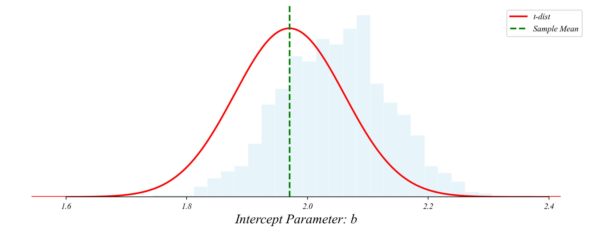
> lets say our sample mean was 1.97
> so if i were to ask you the probability of getting this sample mean under the standard null of b=0, what would you say?
Testing whether the mean is significantly different from zero
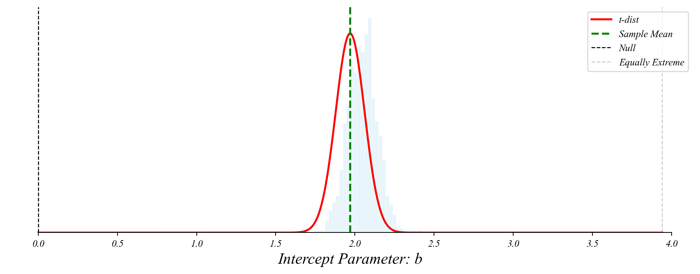
> here we’re centering the t-distribution on the observed sample mean
> as before, this is mathematically equivalent to centering it on the null
A t-test a linear model with only an intercept: \(y = \beta_0 + \epsilon\)
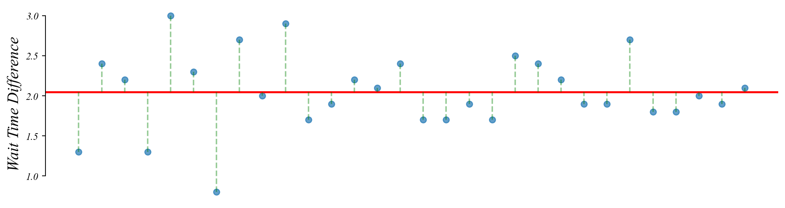
> the sample mean \(\beta_0\) minimizes the sum of squared errors
> the p-value tells us the probability of the data given the default null
> the best guess of the true mean is \(\beta_0\)
> this is the simplest version of an OLS regression model
Are wait times different in the morning and afternoon?
> imports
> the dataset
Let’s introduce a (potential) relationship: \(y = \beta_0 + \beta_1 x + \epsilon\)
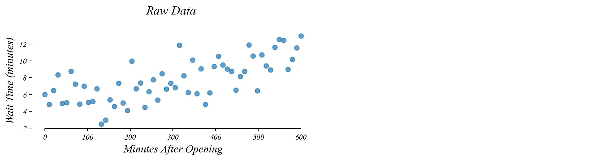
Let’s introduce a (potential) relationship: \(y = \beta_0 + \beta_1 x + \epsilon\)
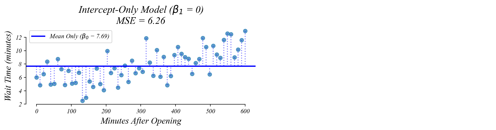
Let’s introduce a (potential) relationship: \(y = \beta_0 + \beta_1 x + \epsilon\)
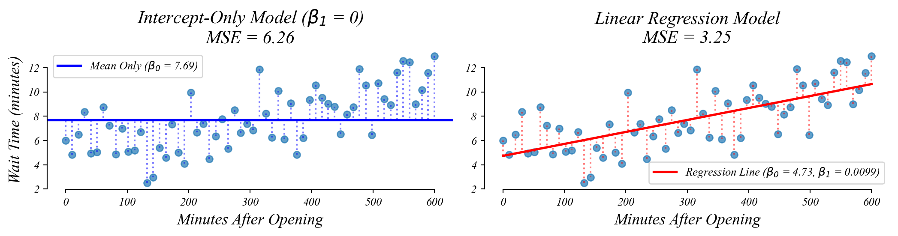
> allowing a slope (β₁) improves model fit (MSE) when there’s a relationship
> the intercept is no longer the mean
> the slope (β₁) gives the best guess of the relationship between x and y
> but could this slope be just sampling error?
Like before, if we take many samples, we get slighly different slopes and slighly different fits.
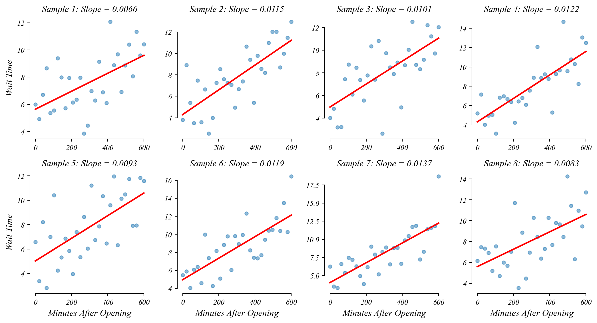
The slope coefficient follows a t-distribution centered on the true slope
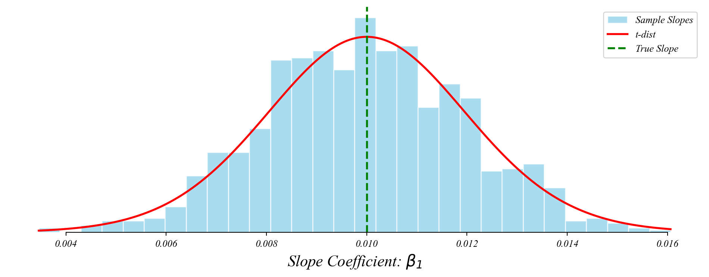
> the slopes follow a t-distribution around the truth!
> this lets us perform a t-test on the slope!
The slope coefficient follows a t-distribution centered on the true slope
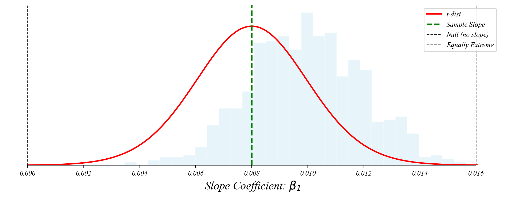
> we don’t know the entire distribution, just our sample slope
> like before, center the distribution on our sample and check the null
> very small p-value = strong evidence against the null hypothesis (β₁ = 0)
Does wait time change throughout the day?
> load imports
> load minutes data
minutes_after_open = [ 0. , 10.16949153, 20.33898305, 30.50847458,
40.6779661 , 50.84745763, 61.01694915, 71.18644068,
81.3559322 , 91.52542373, 101.69491525, 111.86440678,
122.03389831, 132.20338983, 142.37288136, 152.54237288,
162.71186441, 172.88135593, 183.05084746, 193.22033898,
203.38983051, 213.55932203, 223.72881356, 233.89830508,
244.06779661, 254.23728814, 264.40677966, 274.57627119,
284.74576271, 294.91525424, 305.08474576, 315.25423729,
325.42372881, 335.59322034, 345.76271186, 355.93220339,
366.10169492, 376.27118644, 386.44067797, 396.61016949,
406.77966102, 416.94915254, 427.11864407, 437.28813559,
447.45762712, 457.62711864, 467.79661017, 477.96610169,
488.13559322, 498.30508475, 508.47457627, 518.6440678 ,
528.81355932, 538.98305085, 549.15254237, 559.3220339 ,
569.49152542, 579.66101695, 589.83050847, 600. ]Does wait time change throughout the day?
> load wait time data
wait_times = [ 5.99342831, 4.82516631, 6.49876691, 8.35114446, 4.93847291,
5.04020066, 8.76859512, 7.24673387, 4.87461055, 7.00037432,
5.09011377, 5.18718456, 6.70426353, 2.49547341, 2.97389315,
5.40084867, 4.6014564 , 7.35730822, 5.01446032, 4.10759599,
9.96519584, 6.68404062, 7.37234454, 4.48948668, 6.35191252,
7.76421806, 5.34208064, 8.49715875, 6.64618025, 7.36576504,
6.84743423, 11.85709874, 8.22724284, 6.24051035, 10.10271694,
6.11763473, 9.07874414, 4.84337162, 6.20803468, 9.35982417,
10.54472977, 9.51222809, 9.03988988, 8.77067396, 6.51753229,
8.13658277, 8.75668856, 11.89390547, 10.56859251, 6.45697054,
10.7329137 , 9.41627612, 8.93429159, 11.61318309, 12.55352447,
12.45578058, 9.01648021, 10.17818542, 11.56083195, 12.95109025]Does wait time change throughout the day?
> merge into a dataframe
Does wait time change throughout the day?
> predict wait time using time of day
# Add a constant for the intercept
X = data[['minutes_after_open', 'intercept']]
y = data['wait_times']======================================================================================
coef std err t P>|t| [0.025 0.975]
--------------------------------------------------------------------------------------
const 4.7328 0.467 10.128 0.000 3.797 5.668
minutes_after_open 0.0099 0.001 7.340 0.000 0.007 0.013
======================================================================================> every minute later in the day sees 0.01 minutes more of wait time
> this is very unlikely to be due to chance
Regression is a flexible t-test
One-sample t-test:
Continuous Predictor:
Regression with an intercept and continuous predictor: \(y = \beta_0 + \beta_1 \cdot x + \epsilon\)
\(x\) is a continuous predictor (like age, income, temperature, etc.)
Tests whether \(\beta_1 = 0\) (no relationship between x and y)
Multiple regression:
Regression is the workhorse of empirical economics
Labor Economics:
Policy Analysis:
Finance:
Connecting t-tests to regression
Unified Framework: T-tests and regression are part of the same general linear model framework.
Continuous Predictors: Regression extends t-tests by allowing continuous predictors.
Multiple Variables: Regression lets us include multiple predictors and control variables.
Same Interpretation: The p-values have the same interpretation: probability of seeing results this extreme if the null is true.
Same Distribution: Coefficient estimates follow t-distributions centered on true values.
Extending our regression framework
We will explore:
> all built on the same statistical foundation we explored today